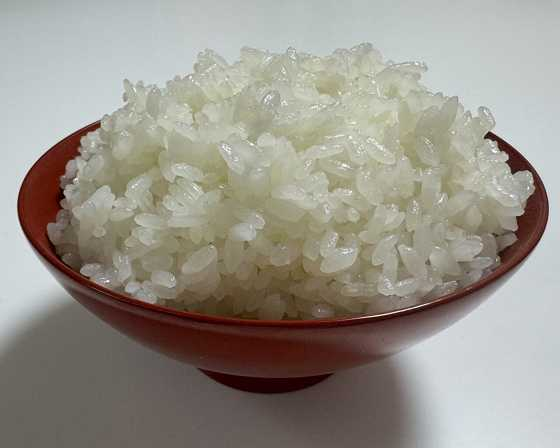
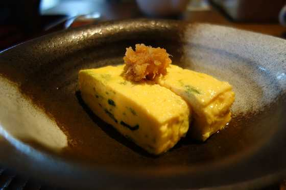
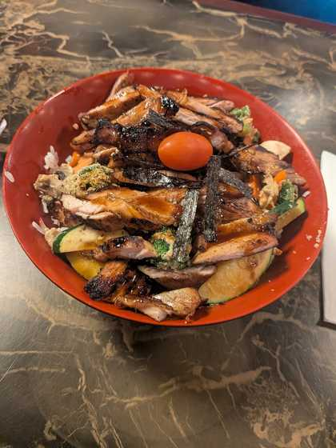
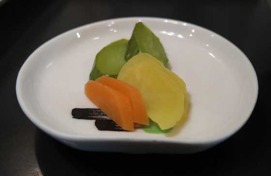
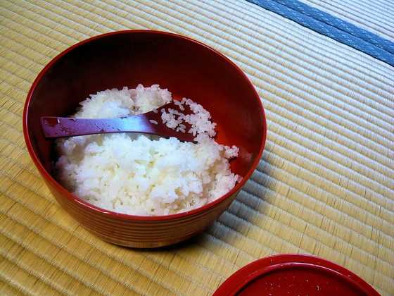

北海道北見市北進町のごはん屋
ごはん家さん
COCORU
おいしい時間に、そっと寄り添うごはんを。
この一文は、お店のInstagramの言葉をもとに制作側がまとめたものです。

お店の想い
COCORUは、北見市北進町にあるごはん屋さんです。テイクアウトにも対応しています。
お店のInstagramでは、開店1周年の投稿の中で「おいしい時間」に寄り添うお店でありたい、という想いが語られています。ごはんを囲む時間そのものを大切にしたい。このサイトの配色や丸い器の形は、そんな想いから発想しました。
確認できた事実: 北見市北進町3丁目14-24の飲食店/テイクアウト対応/2025年開店(Instagramアカウント名より)/「おいしい時間に寄り添うお店でありたい」という趣旨の発信(Instagram・1周年の投稿)。店名「COCORU」の意味や由来は確認できていないため、記載していません。
上記以外の文章・デザインは制作側のイメージです。

メニュー
お店ではごはんを中心にした料理を提供していると紹介されています。具体的なメニュー・価格・営業時間・定休日は変更があるため、ここでは準備中とし、最新情報はInstagramをご覧ください。







写真はフリー素材のイメージで、お店の料理ではありません。
口コミ(イメージ例)
以下は制作側が作った例文であり、実在のお客様の声ではありません。
お昼にゆっくりごはんをいただきました。湯気のたつごはんに、気持ちがほどけます。
持ち帰りにして、家でもほっとできました。ごはんの時間が楽しみになります。
ひと息つきたいときに寄りたくなる、やさしい雰囲気のお店だと思います。



掲載写真はフリー素材のイメージで、店舗の実際の様子・料理ではありません。他の地域で撮影されたものを含みます。縮小・切り抜きの加工をしています。
写真クレジット
- Japanese rice in Wajima-nuri lacquerware / yuuki ゆうき(金野裕希) / CC BY-SA 4.0 / 出典(撮影地: 日本(座標は青森県周辺))
- Onigiri 001 / Ocdp / CC0 / 出典(撮影地: 日本とされる(詳細不明))
- Miso soup overhead / Douglas Perkins / CC0 / 出典(撮影地: 日本(和歌山県))
- Tamagoyaki 01 / Asacyan / CC BY-SA 3.0 / 出典(撮影地: 不明)
- Donburi Rice bowl of Chicken Teriyaki with Tomato / TechnoKittyCat / CC0 / 出典(撮影地: アメリカ(ワシントン州))
- Tsukemono dish / Douglas Perkins / CC0 / 出典(撮影地: 日本とされる(詳細不明))
- Spinach Ohitashi / Lombroso / CC0 / 出典(撮影地: 不明)
- Yaki-Onigiri 001 / Ocdp / CC0 / 出典(撮影地: 日本とされる(詳細不明))
- Miso Soup 001 / Ocdp / CC0 / 出典(撮影地: 日本とされる(詳細不明))
- White cup with green tea in it / Douglas P Perkins / CC BY 3.0 / 出典(撮影地: 不明)
- Nikujaga and rice and miso soup / ノボホショコロトソ / CC BY 4.0 / 出典(撮影地: 不明)
- Rice bowl with boiled rice, 2008 / DocChewbacca / CC BY-SA 2.0 / 出典(撮影地: 不明)
- Japanese rice bowl chawan / サフィル / CC BY-SA 4.0 / 出典(撮影地: 不明)
- Onigiri and tsukemono by Elijah / Elijah / CC BY 2.0 / 出典(撮影地: 日本とされる(詳細不明))
- Rice, miso soup, tsukemono and tea by yajico in Kyoto / yajico / CC BY 2.0 / 出典(撮影地: 日本(京都市))
- Lake Saroma, Saroma-ko, Kitami, Hokkaido; February 2015 / bryan... / CC BY-SA 2.0 / 出典(撮影地: 日本(北海道北見市 サロマ湖周辺))